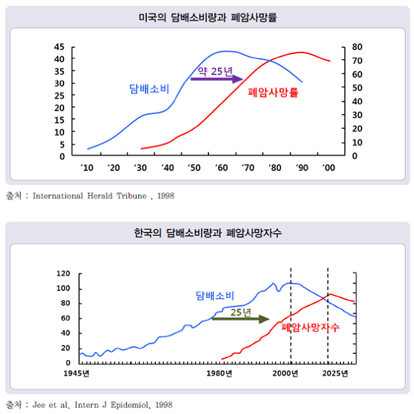

담배의 유해성분
담배연기는 크게 주류연과 부류연으로 나뉩니다. 흡연자가 필터를 통해 들이마신 후 내뿜는 연기를 주류연이라 하고 담배가 스스로 타면서 발생하는 연기를 부류연이라 합니다. 당연히 필터를 거치지 않은 부류연이 더 독하고 유해물질의 농도가 높습니다. 간접흡연의 경우 들이마시는 연기의 80%이상이 더 해로운 연기인 부류연이기 때문에 흡연은 자신의 가족의 건강을 흡연자 자신만큼 크게 해치게 됩니다.
담배연기 속의 수천 가지 물질 중 가장 해로운 성분 3가지를 꼽자면 타르, 일산화탄소, 니코틴을 꼽을 수 있습니다.
타르
타르는 담배가 탈 때 나오는 끈적끈적한 검은 액체로 각종 독성물질과 발암물질을 포함하는 독한 물질입니다. 일반적으로 담뱃진이라고 부르기도 하는 타르는 흡연자의 폐에 쌓이는 새까만 찌꺼기로 많이 알려져 있습니다. 이 타르를 담배에서 없애기 힘든 이유 중 하나는 담배의 독특한 맛이 이 타르에 의해 생기는 것이기 때문입니다. 따라서 타르가 없는 전자담배나 니코틴 껌등은 흡연자가 담배 맛이 없다고 느끼게 됩니다. 연구결과 타르는 담배연기를 통해 폐로 들어가 우리 몸의 모든 세포와 모든 장기에 피해를 주는 것으로 알려졌습니다. 하루에 한 갑을 흡연하는 흡연자가 일년간 담배를 폈을 때 몸 속으로 들어가는 타르의 양은 유리컵 하나를 꽉 채울 정도의 양입니다.
이러한 타르의 부작용 때문에 담배의 양을 줄이거나 저타르담배(슬림, 라이트, 마일드 담배등)를 피우는 분이 많습니다. 하지만 한마디로 얘기하면 아무 효과가 없습니다.
일산화탄소(CO)
일산화탄소는 연탄가스로 많이 알려져 있습니다. 일산화탄소는 우리 핏속의 헤모글로빈에 달라붙어 산소를 운반시키지 못하게 하고 (저산소증) 심할 경우 연탄가스중독처럼 사망하게 합니다. 흡연 중 들이마시는 일산화탄소가 머리가 아프고 정신이 멍해지는 증상이 나타나는 원인입니다.
니코틴
니코틴은 습관성이 강하고 중독성을 가지고 있어 금연을 어렵게 만드는 주범입니다. 흡연 상태는 니코틴 중독이며 정신과 진단체계(DSM-IV, ICD-10)에 따르면 약물의존, 알콜의존과 유사하게 니코틴의존상태로 볼 수 있습니다. 니코틴은 담배의 습관성 중독을 일으키는 마약성 물질로 아편과 거의 같은 수준의 중독을 일으킵니다. 따라서 담배를 일단 피우면 30-40분마다 담배를 피워야만 하는 원인도 이 니코틴 때문입니다. 담배 한 개비에는 1mg가량의 니코틴이 함유되어 있으며 니코틴은 40mg이상이 체내에 들어올 경우 사망할 수 있습니다.
흡연과 폐암의 위험성
흡연으로 인한 폐암의 발생은 흡연 시작 후 25-30년 후에 가장 많이 일어납니다. 우리나라의 경우 아래 그림과 같이 흡연량의 증가에 따라 미국과 같이 앞으로 폐암으로 인한 사망률이 크게 늘어날 것으로 보입니다. 이미 2010년 통계에 따르면 폐암은 전체 암중의 21.7%로 1위, 폐암은 가장 사람을 많이 죽이는 암입니다.
 |